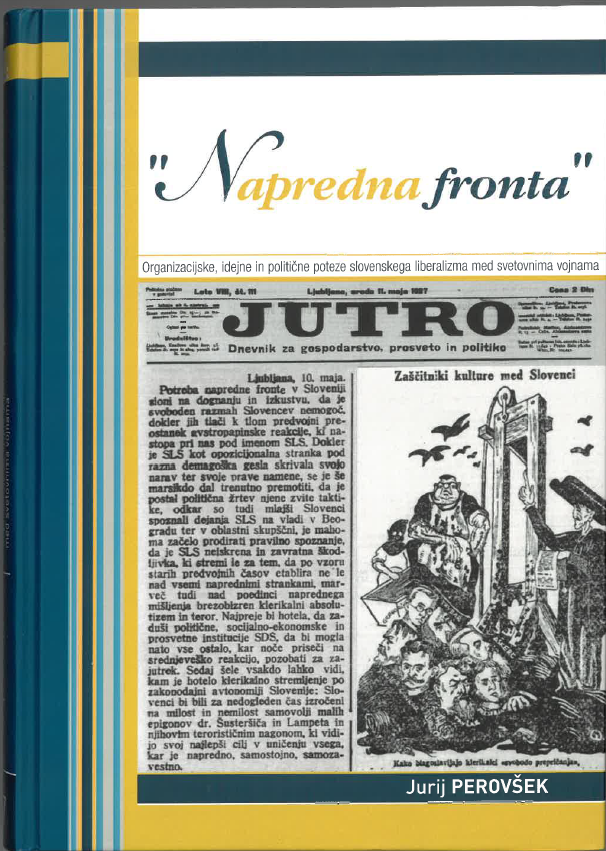

1Po skoraj treh desetletjih od izida monografije Liberalizem in vprašanje slovenstva: nacionalna politika liberalnega tabora v letih 1918–1929 (1996) je prišla na knjižne police nova knjiga dr. Jurija Perovška, ki tematizira slovenski liberalizem med obema vojnama. Danes že klasično delo s konca 20. stoletja, s katerim je Perovšek kot dolgoletni sodelavec Inštituta za novejšo zgodovino v Ljubljani oral ledino v slovenski historiografiji, je leta 2013 dobilo nadaljevanje v knjigi O demokraciji in jugoslovanstvu: slovenski liberalizem v Kraljevini SHS/Jugoslaviji. Monografija, ki je pred nami, tako zaokrožuje tematiko, poznano iz prvih dveh, hkrati pa poglablja naše poznavanje o posameznih izbranih poglavjih iz slovenske politične zgodovine prve polovice 20. stoletja.
2Resno zgodovinsko delo, kot je nedvomno Perovškovo, seveda ne more obravnavati razvoja liberalne strankarske scene brez njene sočasne umestitve v širši politični prostor. Avtorjevo suvereno poznavanje drugih dveh poglavitnih strankarskih dejavnikov – katoliškonarodnega v okviru Katoliške narodne stranke in njene naslednice (Vse)Slovenske ljudske stranke ter marksističnega v smislu socialdemokratskega in komunističnega političnega organiziranja v različnih oblikah – bralcu omogoča, da lahko slovenski liberalizem umesti tako v kontekst jugoslovanske politične stvarnosti kot tudi v širše evropske idejnopolitične tokove. Posrečen krovni izraz »napredna fronta«, ki ga Perovšek uvaja v slovensko zgodovinopisje, še zdaleč ne predstavlja zgolj ene stranke, ampak domiselno povezuje različne politične formacije in frakcije liberalnega profila, ki se borijo za prevlado na – do uvedbe kraljeve diktature leta 1929 – relativno močno razdrobljenem političnem prizorišču. Perovšek se odlično znajde v različnih cepitvah in delitvah, skozi katere se podaja liberalni tabor na prehodu iz habsburške monarhije v novo državo, se pravi v Kraljevino Srbov, Hrvatov in Slovencev (od leta 1929 Kraljevino Jugoslavijo), nastalo jeseni 1918 na ruševinah nekdanjega cesarstva in po združitvi z »jugoslovanskim Piemontom« Srbijo.
3Perovškove definicije političnega profila slovenskih liberalnih prvakov – od Ivana Tavčarja in Vladimirja Ravniharja pa do Gregorja Žerjava in Alberta Kramerja – so danes splošno sprejete. V novi knjigi jih je ustrezno nadgradil s pomočjo biografskih predstavitev nekaterih manj izstopajočih akterjev, pri čemer gre zlasti za osebnosti Dinka Puca, Vekoslava Kukovca in Igorja Rosine. Kot ugotavlja in na številnih primerih prepričljivo dokazuje avtor, je napredni tabor »svoj politični položaj utemeljeval z v svojih vrstah prevladujočim jugoslovanskim unitarističnim narodnodržavnim stališčem, idejno vrednost pa, kot že v avstrijski dobi, s sklicevanjem na modernost (naprednost) in vztrajnim bojem proti političnemu katolicizmu (t. i. klerikalizmu)«. Obe razsežnosti slovenske liberalne politike je v številnih študijah že natančno obdelal, pri čemer znanje o prvi v novi monografiji poglablja, tistega o drugi pa pomembno dopolnjuje z obširnimi raziskavami. Idejnopolitični profil slovenskega klasičnega liberalizma do leta 1921 je pred četrt stoletja v svoji – danes prav tako že klasični študiji – podrobno obdelal Zvonko Bergant, Perovškova knjiga pa potegne lok njegovega razvoja vse do druge svetovne vojne.
4Znanstvena monografija, ki obsega 325 strani in se ponaša tudi z lepo slikovno opremo, je tako razdeljena na pet obsežnih tematskih sklopov. Prvi obravnava organizacijsko-politično sliko slovenskega liberalnega tabora od preloma stoletja do napada Sil osi na Kraljevino Jugoslavijo leta 1941. Sledi poglavje, ki analizira odnos liberalcev do vere in Cerkve. Tretji tematski sklop je posvečen dvema predstavnikoma mariborskega liberalnega tabora, Vekoslavu Kukovcu in Igorju Rosini. Iz mesta ob Dravi nas avtor v četrtem poglavju popelje v slovensko prestolnico in oriše biografsko skico župana Dinka Puca. Na koncu pred sklepnimi mislimi sledi še predstavitev voditelja slovenskih katoliških narodnjakov Antona Korošca skozi liberalne oči.
5Perovškova vrlina je izjemna faktografska natančnost, ki bralcu omogoča verodostojno informacijo tudi o tistih poglavjih slovenske politične zgodovine, za katere smo pogosto – zmotno in nekritično – prepričani, da je o njih bilo »že vse napisano«. Tudi ob branju Perovškove nove knjige naletimo na nekaj takšnih primerov, recimo o genezi oblikovanja liberalne stranke na Kranjskem, ko avtor natančno obdela razvoj njenega poimenovanja v okviru narodnjaških in naprednjaških opredelitev. V monografiji se tako soočamo z različnimi političnimi formacijami, od Slovenskega društva v Ljubljani v devetdesetih letih do delovanja Jugoslovanske nacionalne stranke na predvečer druge svetovne vojne. V tem smislu je Perovšek zanesljiv kronist, ki pa s svojimi analizami naravnost spodbuja tudi druge raziskovalce, da njegove ugotovitve primerjajo s svojimi. To je še toliko lažje, ker se avtor ne omejuje zgolj na slovensko jedrno deželo Kranjsko, ampak izkazuje tudi odlično poznavanje razvoja strankarskega življenja drugod, od Primorske do Štajerske in Prekmurja.
6»Ločitev duhov«, ki je zajela slovenski politični prostor na prelomu stoletja, se je v preteklosti (in se ponekod tudi še danes) pogosto ocenjevala skozi prizmo nekakšne slogaške nostalgije. Perovšek tej ne podlega in nam predstavlja liberalizem na Slovenskem »kot sestavni del modernega političnega triptiha«, ki je ustrezal razvoju pri drugih srednjeevropskih in zahodnoevropskih narodih. Prav tako pomembna pa je tudi njegova naslednja ugotovitev: »V drugi polovici tridesetih let se je liberalna politična moč izčrpala in organizacijsko sesula. Liberalni tabor je kot politični subjekt izzvenel.« V kolikšni meri sta k temu pripomogli idejna moč in strankarska organiziranost katoliškonarodnih konkurentov na jugoslovanskem političnem prizorišču, je seveda posebno vprašanje, ki mu je tudi v monografiji namenjena ustrezna pozornost. Predstavitev vodilnega slovenskega politika kraljeve Jugoslavije Antona Korošca skozi prizmo njegovih liberalnih nasprotnikov je v tem oziru še posebej zanimivo poglavje knjige.
7Perovšek se prepričljivo sooča še z eno klasično poenostavitvijo iz preteklih prikazov slovenske politične zgodovine. Ob prebiranju nekaterih starejših del namreč večkrat dobimo vtis, kot da bi bili slovenski liberalci zaradi svojega poudarjenega antiklerikalizma že kar avtomatično tudi sovražniki vere nasploh. Perovšek takšno gledanje zavrača: »Liberalci so bili, kljub napadom na Katoliško cerkev, duhovščino in katoliško vero, z dogmatično-zakramentalnega vidika lojalni katoličani v zasebnem življenju. Od katoliške politične strani so se razlikovali v stališču, da vere ne bi smeli vključevati v politično življenje.« To seveda ni prav v ničemer omililo kulturnobojne osti pisanja njihovega glavnega glasila, dnevnika Jutro, ki ga Perovšek v monografiji analitično opredeljuje kot »najvplivnejše ideološko in politično orodje liberalizma«.
8Nova Perovškova knjiga bo gotovo hitro našla pot med vse tiste, ki jih zanima klasična politična zgodovina. Glede na raziskovalno vnemo, ki ga ni zapustila niti po formalni službeni upokojitvi, pa smo lahko prepričani, da to ni njegova zadnja beseda o »napredni fronti« na Slovenskem.